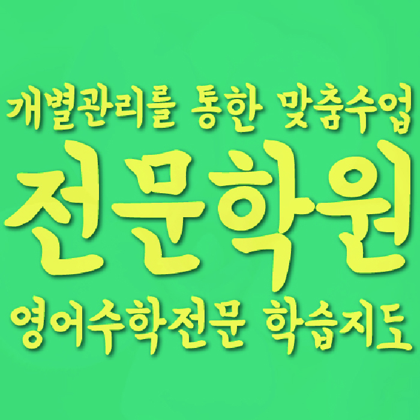

MIDDLE MATH
종암동 중등 수학학원
종암동 중등 수학학원 선택 전 재등록 전 확인할 학습 기준, 함수·그래프·도형 해석과 개념 연결 진단, 학교 시험·누적 유형 문제 순서와 센터·가능 학년 확인 기준을 살펴보세요.
01 Quick answer
종암동 중등 수학: 재등록 전 확인할 학습 기준
종암동에서 ‘재등록 전 확인할 학습 기준’을 판단할 때는 점수보다 최근 수학 풀이를 먼저 봐야 합니다. 출발 자료: 최근 시험지에서 ‘문제의 조건을 옮겨 그린 그림과 좌표·교점·범위를 잘못 표시한 위치’와 ‘개념 설명 메모와 대표 문제에서 해당 공식을 선택한 이유’가 드러난 위치를 한 곳씩 표시하세요. 바꿀 행동: ‘주어진 관계를 식과 그림으로 각각 나타내고 두 표현에서 같은 조건을 가리키기’를 먼저 하고 ‘정의·조건·대표식을 한 줄씩 연결한 뒤 조건이 바뀐 문제에 같은 개념을 적용하기’는 별도 문제에서 연습하세요. 일주일 뒤: ‘표현 방식이 바뀐 문제에서도 그래프의 변화와 식의 조건을 연결하는지’와 ‘풀이를 보지 않고 개념의 적용 조건과 사용 이유를 설명하는지’에 학생이 직접 답하는지 확인하세요.
확인 기준
종암동 상담 메모에는 함수·그래프·도형 해석의 첫 행동과 개념 연결을 다시 확인할 날짜를 적고 이용 조건은 별도 줄로 나눕니다.


 010-6839-8283
010-6839-8283학습 답변 요약
핵심 주제는 ‘재등록 전 확인할 학습 기준’입니다. 함수·그래프·도형 해석과 개념 연결의 출발 상태를 확인하고 내신 범위·학교별 출제 유형과 계산 정확도의 실행 기록과 학교·센터 사실을 분리해 살펴봅니다.
종암동 중등 수학 진단: 재등록 전 확인할 학습 기준
종암동 중등 수학을 비교할 때는 ‘재등록 전 확인할 학습 기준’부터 구체화합니다. 첫 질문은 ‘식·그래프·표·도형이 같은 관계를 나타낸다는 점을 연결해 읽지 못하는지’이며, 답은 최근 시험지의 풀이 흔적에서 확인합니다.
이어 ‘공식의 이름은 알지만 적용 조건과 개념 사이의 관계를 자기 말로 설명하지 못하는지’도 별도 질문으로 남기고 답변과 풀이 흔적이 어긋난 지점을 찾아 함수·그래프·도형 해석과 개념 연결의 순서를 현실적으로 정하세요. 일주일 뒤에는 ‘재등록 전 확인할 학습 기준’에 해당하는 새 문제도 혼자 시작하는지 다시 확인합니다.
최근 시험지에서 함수·그래프 해석과 개념 연결을 구분하는 기준
진단할 때는 ‘문제의 조건을 옮겨 그린 그림과 좌표·교점·범위를 잘못 표시한 위치’와 ‘개념 설명 메모와 대표 문제에서 해당 공식을 선택한 이유’가 보이는 자료만 고르고 처음 답의 이유와 수정한 이유를 나눠 지식 부족과 절차 문제를 구분하세요.
각 표시 옆에는 ‘표현 방식이 바뀐 문제에서도 그래프의 변화와 식의 조건을 연결하는지’ 또는 ‘풀이를 보지 않고 개념의 적용 조건과 사용 이유를 설명하는지’ 중 해당 질문을 붙이고 재확인 날짜를 적습니다. 이 기록으로 함수·그래프·도형 해석과 개념 연결에 필요한 피드백을 구체화합니다.
학교 시험과 누적 유형 문제에서 함수·그래프 해석과 개념 연결을 나누는 방법
시험 일정표에서 내신 범위와 누적 유형 문제 약점을 다른 줄에 둡니다. 이어 ‘내신의 단원별 그래프 문제와 누적 유형 문제의 여러 개념이 섞인 시각 자료를 구분하는 기준’과 ‘내신 범위의 필수 개념과 누적 유형 문제에서 다시 등장한 선수 개념을 구분해 연결하는 기준’을 각 자료에 적용할지 판단하세요.
정해진 학교 범위와 처음 보는 문제에서 함수·그래프·도형 해석과 개념 연결이 각각 어떻게 드러나는지 확인하세요. 자료별 완료 기준으로 시험 전후의 우선순위를 다시 세웁니다.
‘재등록 전 확인할 학습 기준’에 맞춘 주간표에서는 함수·그래프·도형 해석 확인과 개념 연결 재확인을 같은 날에 몰아넣지 마세요. 시험 뒤 두 기록을 비교해 함수·그래프·도형 해석과 개념 연결 중 학생이 판단 근거를 다시 말하지 못한 영역부터 보완하세요.
종암동 학교와 학년 정보와 함수·그래프·도형 해석 질문을 구분하는 법
페이지에서 확인되는 참고 학교는 종암중·사대부중·개운중 등이며, 해당 학교의 모든 과정이 열린다는 뜻은 아니므로 현재 범위를 다시 확인해야 합니다.
수학 가능 학년 항목에서 중1·중2·중3 표기를 확인할 수 있어 이 표기만으로 내신 범위·학교별 출제 유형과 계산 정확도 과정의 운영 여부를 단정할 수는 없습니다. 방문 전 와와학습코칭센터 종암점과 제공 주소 서울 성북구 종암로27길 13 도원프라자 501을 함께 대조하세요. 와와학습코칭센터 종암점 이용 조건을 비교할 때는 교습비와 시간표를 상담 시점에 다시 확인하고 제공 주소에서의 이동 시간을 계산합니다.
한 가지 풀이 병목부터 시작하는 함수·그래프 해석 7일 계획
첫 7일에는 ‘문제의 조건을 옮겨 그린 그림과 좌표·교점·범위를 잘못 표시한 위치’를 기준선으로 남깁니다. 이번 주 실행 항목은 ‘주어진 관계를 식과 그림으로 각각 나타내고 두 표현에서 같은 조건을 가리키기’이며 하루 분량보다 완료 흔적을 기록하는 일이 우선입니다.
마지막 날에는 ‘표현 방식이 바뀐 문제에서도 그래프의 변화와 식의 조건을 연결하는지’에 학생이 직접 답합니다. 답을 근거로 첫 행동을 다시 설명할지, ‘정의·조건·대표식을 한 줄씩 연결한 뒤 조건이 바뀐 문제에 같은 개념을 적용하기’를 시작할지 선택하세요. ‘재등록 전 확인할 학습 기준’의 첫 행동은 ‘주어진 관계를 식과 그림으로 각각 나타내고 두 표현에서 같은 조건을 가리키기’를 먼저 하고 ‘정의·조건·대표식을 한 줄씩 연결한 뒤 조건이 바뀐 문제에 같은 개념을 적용하기’는 별도 문제에서 연습하세요. 다음 판단에서는 ‘표현 방식이 바뀐 문제에서도 그래프의 변화와 식의 조건을 연결하는지’와 ‘풀이를 보지 않고 개념의 적용 조건과 사용 이유를 설명하는지’에 학생이 직접 답하는지 확인하세요.
함수·그래프 해석과 개념 연결 답변을 실행 계획으로 바꾸는 법
상담 전 ‘재등록 전 확인할 학습 기준’을 설명할 최근 수학 자료와 가능한 가정 학습 시간을 적어 두세요. ‘그림을 대신 그려 주기보다 학생이 조건을 시각화하는 과정을 어떻게 확인하는지’와 ‘공식 암기와 개념 이해를 어떤 질문과 풀이 기록으로 나누어 확인하는지’를 분리해 질문합니다.
마지막에는 함수·그래프·도형 해석을 누가 언제 확인하는지, 개념 연결을 어떤 자료로 다시 볼지 적습니다. 시간표·교습비·통학은 별도 조건입니다.
- 학생 자료문제의 조건을 옮겨 그린 그림과 좌표·교점·범위를 잘못 표시한 위치
- 시험 계획학교 범위표와 개념 연결 연습 완료일·재확인일
- 재확인내신 범위·학교별 출제 유형 확인 날짜와 학생 설명 기록
- 이용 조건수학 가능 학년(중1·중2·중3)·시간표·교습비·통학 동선
02 Parent perspective
종암동 중등 수학 학부모 상담 상황
아래 종암동 중등 수학 상담 장면은 실제 이용 후기나 특정 학생의 성과가 아닌 준비용 가상 예시입니다. 학습 결과는 학생의 출발점과 실천 정도에 따라 달라질 수 있습니다.
시험 뒤 공부 순서를 정하지 못한 종암동 학생을 가정했습니다. 학부모는 ‘재등록 전 확인할 학습 기준’을 중심으로 함수·그래프·도형 해석에서 막힌 이유와 개념 연결의 다음 확인일을 나누어 적습니다.
제공 주소까지의 이동 시간을 확인하는 종암동 가상 상담입니다. 통학·시간표와 수학 가능 학년(중1·중2·중3)을 먼저 적은 뒤 개념 연결의 확인 질문은 별도 칸에 둡니다.
03 FAQ
종암동 중등 수학 자주 묻는 질문
학생 자료, 가능 학년과 실제 이용 조건을 나누어 답했습니다.
종암동 중등 수학에서 ‘재등록 전 확인할 학습 기준’은 어떤 자료부터 확인하나요?
최근 시험지에서 ‘문제의 조건을 옮겨 그린 그림과 좌표·교점·범위를 잘못 표시한 위치’를 기준선으로 확인합니다. 첫 행동은 ‘주어진 관계를 식과 그림으로 각각 나타내고 두 표현에서 같은 조건을 가리키기’, 일주일 뒤 확인 질문은 ‘표현 방식이 바뀐 문제에서도 그래프의 변화와 식의 조건을 연결하는지’입니다.
함수·그래프·도형 해석과 개념 연결 진단 기록은 어떻게 나누나요?
‘문제의 조건을 옮겨 그린 그림과 좌표·교점·범위를 잘못 표시한 위치’와 ‘개념 설명 메모와 대표 문제에서 해당 공식을 선택한 이유’를 다른 칸에 적고 같은 날짜에 비교하세요. 각 기록에는 다시 설명한 날짜와 도움 없이 수행했는지를 남깁니다.
학교 시험과 누적 유형 문제에서 함수·그래프·도형 해석과 개념 연결 비중은 어떻게 나누나요?
내신 기간에는 학교 범위 완료 흔적과 함수·그래프·도형 해석 기록을, 평소에는 누적 유형 문제의 개념 연결 기록을 남깁니다. 어느 쪽이든 ‘내신의 단원별 그래프 문제와 누적 유형 문제의 여러 개념이 섞인 시각 자료를 구분하는 기준’과 ‘내신 범위의 필수 개념과 누적 유형 문제에서 다시 등장한 선수 개념을 구분해 연결하는 기준’을 자료에 맞게 선택하세요.
상담 전 내신 범위·학교별 출제 유형과 계산 정확도를 확인하려면 어떤 자료를 가져가나요?
내신 범위·학교별 출제 유형의 ‘시험 범위표, 교과서 예제·학교 프린트와 최근 서술형 답안’과 계산 정확도의 ‘첫 풀이의 중간 계산과 답을 고친 뒤 다시 쓴 계산 과정’이 보이는 자료를 각각 한 곳씩 고르세요. 두 자료를 언제 다시 확인할지도 상담 메모에 적습니다.
종암동 중등 수학 상담에서 가능 학년과 참고 학교는 어떻게 확인하나요?
공개된 종암동 페이지에서 확인되는 수학 학년 정보는 중1·중2·중3입니다. 등록 전에는 실제 개설 여부와 시간을 다시 확인해야 합니다. 참고 학교에는 종암중·사대부중·개운중 등이 적혀 있습니다. 이는 수업 가능 학교를 보장하는 목록이 아니므로 실제 재학 학교의 범위표와 현재 자료 반영 여부를 함께 확인하세요.
04 Related
종암동 관련 학원·상담 페이지
같은 지역의 과목 조합과 학년 카테고리, 앞뒤 지역 안내를 함께 확인하세요.